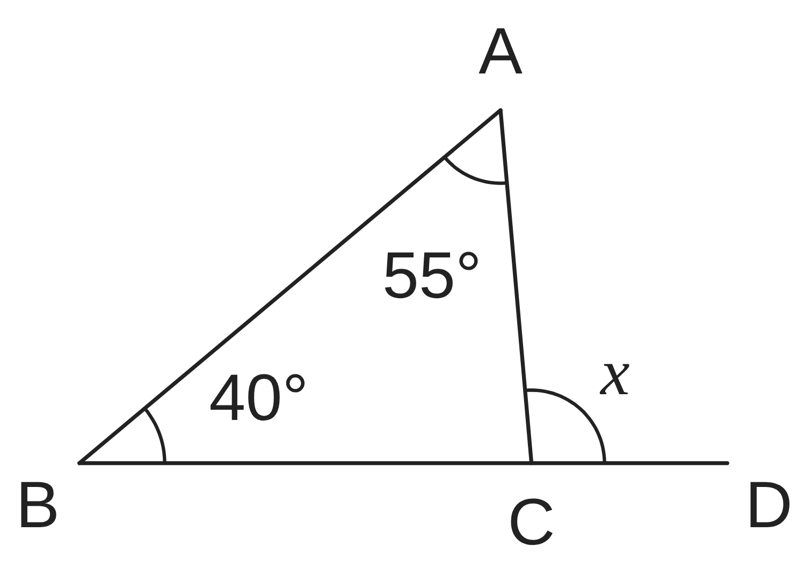
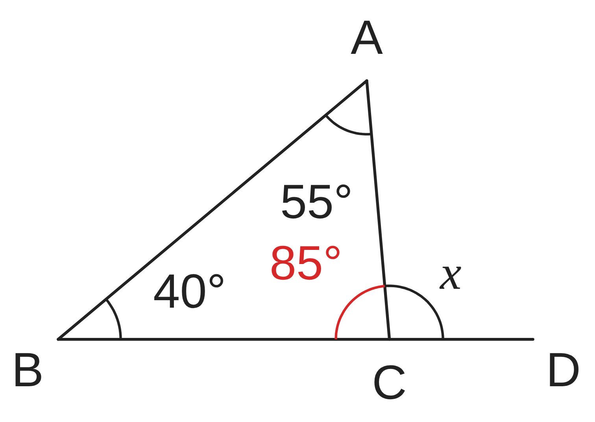
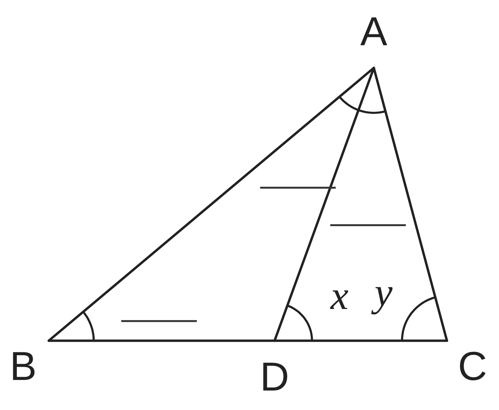
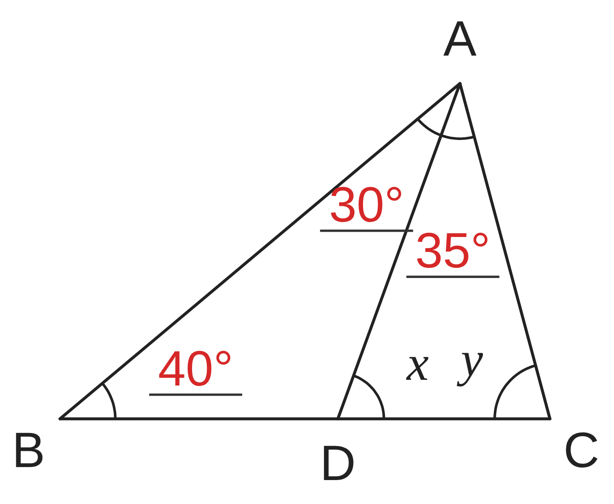

ペア学習
第4時 三角形の内角・外角の性質を使って、角の大きさを求めよう
第3時の重要語句から、1人1問ずつ、言葉を選んで出題する。
聞かれた人は、その言葉の意味を、自分の言葉で言う。
内角
外角
補助線
平行と合同 第4時 三角形の内角・外角の性質を使って、角の大きさを求めよう
めあて
第4時 三角形の内角・外角の性質を使って、角の大きさを求めよう
学習課題
右の図のように、△ABC の辺 BC を
C の方へのばして、その先に点 D をとる。
∠A＝55°、∠B＝40° のとき、
∠ACD（図の ∠x）の大きさを求めよう。
また、∠x と ∠A、∠B を見くらべて、
気づいたことを書こう。

平行と合同 第4時 三角形の内角・外角の性質を使って、角の大きさを求めよう
学習課題のまとめ
第4時 三角形の内角・外角の性質を使って、角の大きさを求めよう
【求める】
∠ACB＝180°−55°−40°＝85°
∠x＝180°−85°＝95°
【気づいたこと】
∠x＝55°＋40°＝∠A＋∠B
【わけ】
∠x＝180°−∠C
∠A＋∠B＝180°−∠C
だから、いつも等しい。

平行と合同 第4時 三角形の内角・外角の性質を使って、角の大きさを求めよう
ことば
第4時 三角形の内角・外角の性質を使って、角の大きさを求めよう
三角形の内側の角を という。
三角形の1つの辺をのばしたとき、
のばした辺と、となりの辺がつくる角を という。
外角は、それととなりあわない2つの の に等しい。
90°より小さい角を 、
90°より大きく 180°より小さい角を という。
3つの内角がすべて鋭角の三角形を 、
1つが直角の三角形を 、
1つが鈍角の三角形を という。
平行と合同 第4時 三角形の内角・外角の性質を使って、角の大きさを求めよう
ことば
第4時 三角形の内角・外角の性質を使って、角の大きさを求めよう
三角形の内側の角を内角という。
三角形の1つの辺をのばしたとき、
のばした辺と、となりの辺がつくる角を外角という。
外角は、それととなりあわない2つの内角の和に等しい。
90°より小さい角を鋭角、
90°より大きく 180°より小さい角を鈍角という。
3つの内角がすべて鋭角の三角形を鋭角三角形、
1つが直角の三角形を直角三角形、
1つが鈍角の三角形を鈍角三角形という。
平行と合同 第4時 三角形の内角・外角の性質を使って、角の大きさを求めよう
例題
第4時 三角形の内角・外角の性質を使って、角の大きさを求めよう
右の図で、点 D は △ABC の辺 BC 上にある。
∠B＝ °、∠BAD＝ °、
∠DAC＝ ° のとき、
∠x、∠y の大きさを求めよう。
数字は、先生が言ってから書こう。

平行と合同 第4時 三角形の内角・外角の性質を使って、角の大きさを求めよう
例題 解答
第4時 三角形の内角・外角の性質を使って、角の大きさを求めよう
∠x は △ABD の外角だから
∠x＝∠B＋∠BAD＝40°＋30°＝70°
△ADC の内角の和は 180° だから
∠y＝180°−70°−35°＝75°
【確かめ】
△ABC の内角の和
40°＋(30°＋35°)＋75°＝180°

平行と合同 第4時 三角形の内角・外角の性質を使って、角の大きさを求めよう
考えよう
第4時 三角形の内角・外角の性質を使って、角の大きさを求めよう
① 次の10通りは、三角形の3つの内角として、あり得るだろうか。
あり得るなら ○、あり得ないなら × を書こう。
| ア 鋭・鋭・鋭 | イ 鋭・鋭・直 | ウ 鋭・鋭・鈍 | エ 鋭・直・直 | オ 鋭・直・鈍 |
|---|
| カ 鋭・鈍・鈍 | キ 直・直・直 | ク 直・直・鈍 | ケ 直・鈍・鈍 | コ 鈍・鈍・鈍 |
|---|
（鋭＝鋭角、直＝直角、鈍＝鈍角）
② ×になったものは、どうして、あり得ないといえるのだろう。
わけを説明しよう。
③ ①②からわかったことを、まとめよう。
発展 三角形の外角が鋭角になることはあるだろうか。あるとすれば、どんな三角形のときだろう。
平行と合同 第4時 三角形の内角・外角の性質を使って、角の大きさを求めよう
振り返り
第4時 三角形の内角・外角の性質を使って、角の大きさを求めよう
今日のめあて
内角
外角
外角の性質
鋭角
鈍角
鋭角三角形
直角三角形
鈍角三角形
今日わかったことを、ペアで1つずつ言い合おう。
ワークシートと演習プリントを出そう。（未完成でも出す）
平行と合同 第4時 三角形の内角・外角の性質を使って、角の大きさを求めよう